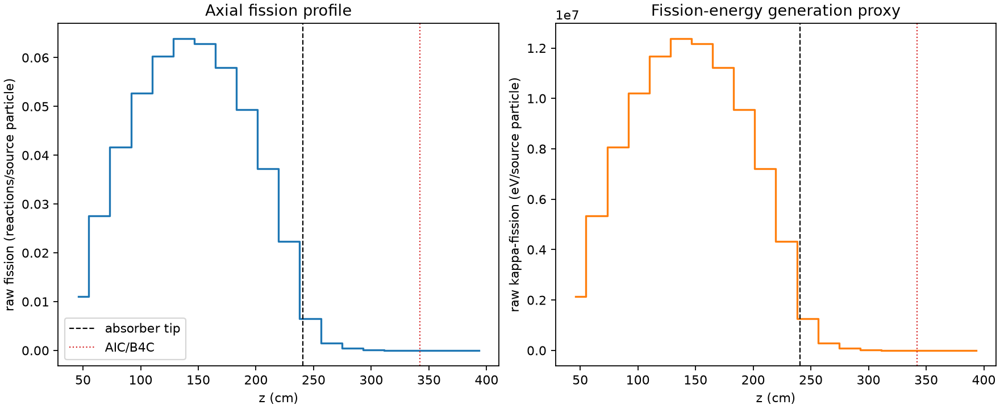
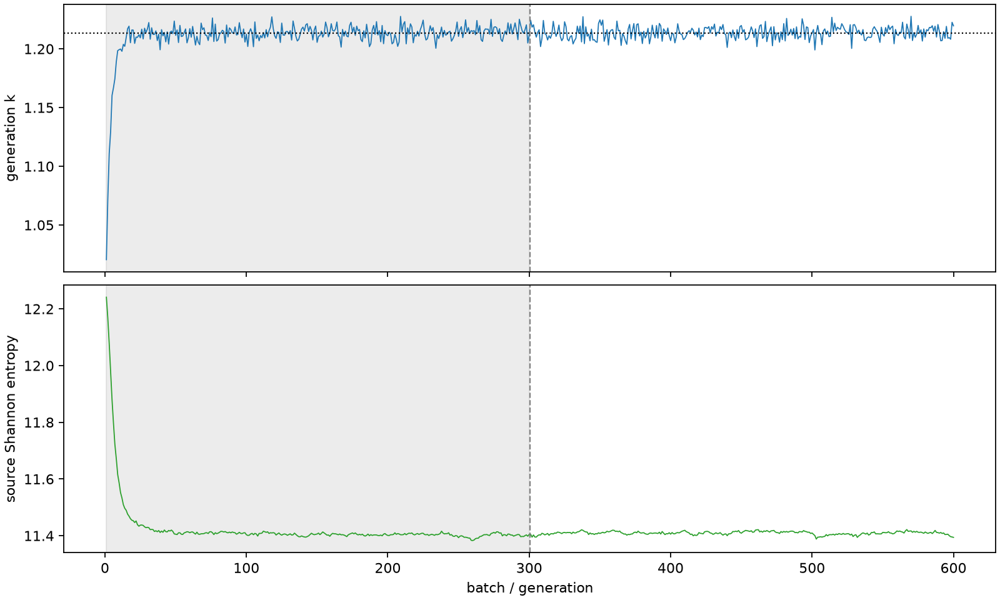

| field | value |
|---|---|
| experiment | V2-STAGE_128_OGRENCI_03-0024 |
| k | 1.2133007859897686 |
| MC standard error | 0.00019087296086204485 |
| seconds | 923.825062418 |
| acceptance | not_assessed |
| convergence | review_required |
Completed is output integrity only; physical and statistical review required. Zero tallies do not prove zero production or zero uncertainty.
| diagnostic | value |
|---|---|
| geometric fuel voxels | 5280 |
| zero fission tally voxels | 209 |
| low signal fuel voxels | 1335 |
| low signal fission share | 8.093821445086514e-05 |
| low signal kappa share | 8.096256597788702e-05 |
| important fission share | 0.9501299837757755 |
| previous filter included | 3945 |
| duration estimate s | 1562.5173488400023 |
| actual minus estimate s | -638.6922864220023 |
| fission relative MC error | statistics |
|---|---|
| all_geometric_fuel | {"voxels": 5280, "positive_mean_voxels": 5071, "zero_mean_voxels": 209, "undefined_relative_error_voxels": 209, "median": 0.012087541342027937, "p95": 0.9254041284608984, "maximum": 1.0000000000000002} |
| low_signal | {"voxels": 1335, "positive_mean_voxels": 1126, "zero_mean_voxels": 209, "undefined_relative_error_voxels": 209, "median": 0.62693300798876, "p95": 1.0, "maximum": 1.0000000000000002} |
| important_95pct | {"voxels": 2577, "positive_mean_voxels": 2577, "zero_mean_voxels": 0, "undefined_relative_error_voxels": 0, "median": 0.007917813795994136, "p95": 0.011658827281723634, "maximum": 0.014568626400459682} |
| outside_previous_filter | {"voxels": 1335, "positive_mean_voxels": 1126, "zero_mean_voxels": 209, "undefined_relative_error_voxels": 209, "median": 0.62693300798876, "p95": 1.0, "maximum": 1.0000000000000002} |
| kappa_fission relative MC error | statistics |
|---|---|
| all_geometric_fuel | {"voxels": 5280, "positive_mean_voxels": 5071, "zero_mean_voxels": 209, "undefined_relative_error_voxels": 209, "median": 0.012073258484774814, "p95": 0.9247679065535834, "maximum": 1.0000000000000002} |
| low_signal | {"voxels": 1335, "positive_mean_voxels": 1126, "zero_mean_voxels": 209, "undefined_relative_error_voxels": 209, "median": 0.6265204078090432, "p95": 1.0, "maximum": 1.0000000000000002} |
| important_95pct | {"voxels": 2577, "positive_mean_voxels": 2577, "zero_mean_voxels": 0, "undefined_relative_error_voxels": 0, "median": 0.007909218762847395, "p95": 0.01164716366106977, "maximum": 0.01455178502112727} |
| outside_previous_filter | {"voxels": 1335, "positive_mean_voxels": 1126, "zero_mean_voxels": 209, "undefined_relative_error_voxels": 209, "median": 0.6265204078090432, "p95": 1.0, "maximum": 1.0000000000000002} |
| axial bin | fission share | kappa-fission share |
|---|---|---|
| 1 | 0.022347294611321036 | 0.02234816112855485 |
| 2 | 0.05553105648602299 | 0.0555310336491849 |
| 3 | 0.08413307425488699 | 0.08413247901398124 |
| 4 | 0.10631899996093963 | 0.10631857156175191 |
| 5 | 0.12174277643677398 | 0.12174197433640771 |
| 6 | 0.12883665201239364 | 0.12883587546772765 |
| 7 | 0.12691000669005278 | 0.12690943988663966 |
| 8 | 0.11703666598279172 | 0.11703596570334772 |
| 9 | 0.09956767408200279 | 0.09956697904025212 |
| 10 | 0.07516495188497316 | 0.07516464318169117 |
| 11 | 0.04517431141398374 | 0.04517420220523473 |
| 12 | 0.013039825385008294 | 0.013042585417485993 |
| 13 | 0.0031205500438391456 | 0.00312155292695813 |
| 14 | 0.0008016344696220983 | 0.0008019239624202391 |
| 15 | 0.00020519025452840116 | 0.00020525474935184876 |
| 16 | 5.0417845118288016e-05 | 5.04342058925293e-05 |
| 17 | 1.4440817256336965e-05 | 1.4443315294431257e-05 |
| 18 | 3.1751634098612286e-06 | 3.177456017489833e-06 |
| 19 | 8.85055739745314e-07 | 8.854055753187631e-07 |
| 20 | 4.171493353000743e-07 | 4.1738623049956255e-07 |
Histories include the inactive-to-active transition at batch 300. kappa-fission approximates fission energy production, not total heat deposition.

